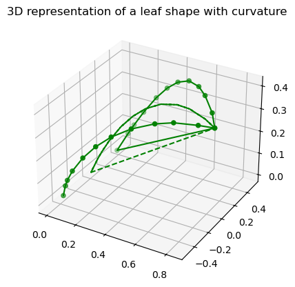
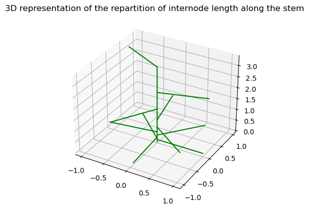
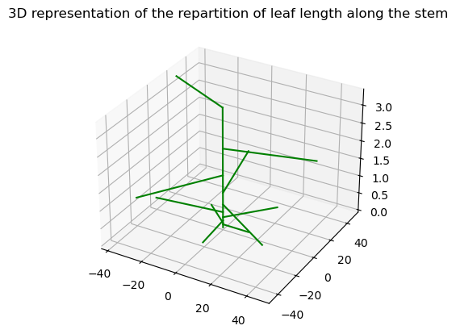
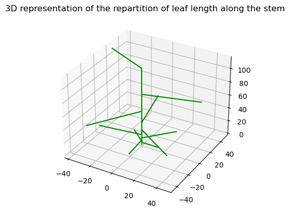
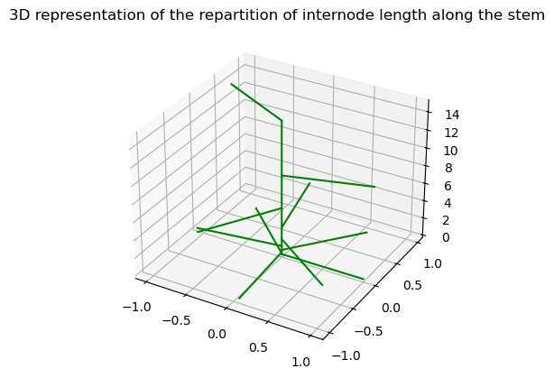
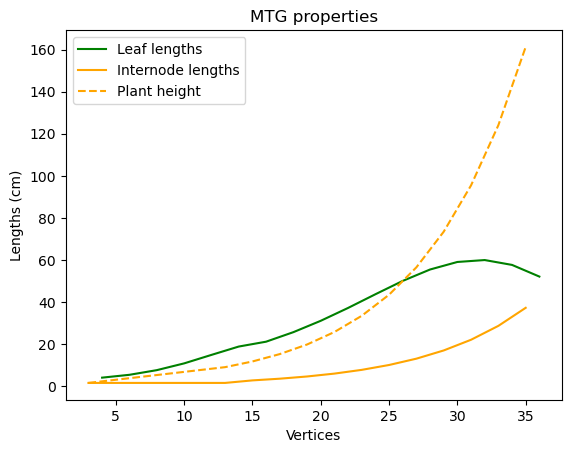

Code
# Deep reloadReviewNB link: https://app.reviewnb.com/orianebro/PhD_Oriane/blob/main/structural_cereal_model.ipynb
# Deep reloadIn this section, we define a static structural model for cereals.
The paragraphs are organized so that it is easy to see how the model is built and how we can play with parameters.
Some 3D plots are interactive, don’t hesitate to rotate them.
The leaf blade is represented as a surface.
A parametric leaf is here defined by sample points (here 12), described by two sets of coordinates:
- \((x,y)\): coordinates for the midrib in a vertical plane, give the curvature of the leaf;
- \((s,r)\): curviliear abcissa (i.e. length along midrib) and relative length-dependent leaf width.
Note that \(s\) can be expressed as a function of \(x\) and \(y\), at point \(p \neq 0\), as follows: $ s_p(x,y) = $.
The origin represents the leaf base.
## Imports
# from installed packages
import numpy as np
import matplotlib.pyplot as plt
from heapq import *
from scipy.interpolate import splprep, splev
from scipy.integrate import simps, trapz
from openalea.plantgl.all import Vector3
# from openalea.openalea.archicrop
from openalea.archicrop.cereals_leaf import leaf_shape_perez, sr_prevot, parametric_leaf
# or
# from openalea.openalea.archicrop.simple_maize import leaf_shape_perez, sr_prevot, parametric_leaf
# from openalea.openalea.archicrop.fitting import leaf_shape_perez
from openalea.archicrop.generator import curvilinear_abscisse
from openalea.archicrop.fitting import fit2, fit3, simplify
from openalea.archicrop.simplification import distance, cost
## Code for generating a parametric leaf for a cereal
pl=parametric_leaf(nb_segment=10, insertion_angle=40, scurv=0.7, curvature=70, alpha=-2.3)
fig, (ax1, ax2) = plt.subplots(nrows=2)
# fig.suptitle('Parametric leaf')
ax1.plot(pl[0], pl[1], '.-', c="green")
ax1.set_xlabel('x')
ax1.set_ylabel('y')
ax1.set_title("Coordinates of the midrib in a vertical plane")
ax2.plot(pl[2], pl[3], '-', c="green")
ax2.plot(pl[2], -pl[3], '-', c="green")
ax2.plot(np.arange(0,1.1,0.1), np.zeros(11), c="green", ls="dashed")
ax2.set_xlabel('s')
ax2.set_ylabel('r')
ax2.set_title("Flattened leaf shape")
plt.subplots_adjust(hspace=0.5)
plt.show()
## Imports
# from installed packages
from mpl_toolkits.mplot3d import Axes3D
from scipy.interpolate import interp2d
import matplotlib.tri as mtri
# from openalea.archicrop
from openalea.archicrop.fitting import leaf_to_mesh_2d
## Code for representing the parametric leaf in 3D (ignore excess lines)
x=pl[0]
y=pl[1]
s=pl[2]
r=pl[3]
pts,ind=leaf_to_mesh_2d(x, y, r)
xs=[pt[0] for pt in pts]
ys=[pt[1] for pt in pts]
zs=[pt[2] for pt in pts]
X,Y=np.meshgrid(xs, ys)
tri=mtri.Triangulation(xs, ys)
fig=plt.figure()
ax=fig.add_subplot(111, projection='3d')
ax.scatter(xs,ys,zs,c="green")
ax.plot(xs,ys,zs,c="green")
ax.plot(xs,np.zeros(len(ys)),zs,c="green",ls="dashed")
ax.set_title("3D representation of a leaf shape with curvature")
plt.show()Please ignore excess straight lines.
Leaves grow around an axis with a given phyllotaxy, represented here as an angle from leaf to leaf (e.g. spiral with a given angle or alternate distichous = \(180^o\)).
## Imports
# from installed packages
# from itertools import cycle
# from openalea.archicrop
from openalea.archicrop.plant_design import leaf_azimuth
## Code for generating leaf azimuths series for a given phyllotaxy
nb_phy=10
phyllotactic_angle=137
spiral=True
phyllotactic_deviation=0
plant_orientation=0
la=leaf_azimuth(size=nb_phy,
phyllotactic_angle=phyllotactic_angle,
phyllotactic_deviation=phyllotactic_deviation,
plant_orientation=plant_orientation,
spiral=spiral)
x=np.cos(la*np.pi/180)
y=np.sin(la*np.pi/180)
z=np.linspace(1,len(la)+1,len(la))
fig,ax=plt.subplots(subplot_kw=dict(projection='3d'))
for i,a in enumerate(la):
ax.plot(np.linspace(0,x[i],2), np.linspace(0,y[i],2), [z[i],z[i]], c="green")
ax.plot([0,0], [0,0], [0,z[-1]], c="green")
ax.set_title("3D representation of phyllotaxy")
plt.show()
Internodes on an axis have varying lengths. The repartition of their lengths along the axis can be approximated with a geometric model.
## Imports
from openalea.archicrop.plant_shape import geometric_dist
## Code for applying lengths to internodes according to a geometric model
plant_height=15
q=1.5
x=np.cos(la*np.pi/180)
y=np.sin(la*np.pi/180)
z=geometric_dist(height=plant_height,
nb_phy=nb_phy,
q=q)
fig,ax=plt.subplots(subplot_kw=dict(projection='3d'))
for i,a in enumerate(la):
ax.plot(np.linspace(0,x[i],2), np.linspace(0,y[i],2), [z[i],z[i]], c="green")
ax.plot([0,0], [0,0], [0,z[-1]], c="green")
ax.set_title("3D representation of the repartition of internode length along the stem")
plt.show()
Leaves that grow on an axis have varying lengths. The repartition of their lengths along the axis can be approximated with a bell shaped model.
## Imports
from openalea.archicrop.plant_shape import bell_shaped_dist
## Code for applying lengths to leaves according to a bell shaped model
max_leaf_length=50
bsd=bell_shaped_dist(max_leaf_length=max_leaf_length,
nb_phy=nb_phy,
rmax=.8,
skew=0.15)
x=np.cos(la*np.pi/180)*bsd
y=np.sin(la*np.pi/180)*bsd
z=geometric_dist(height=plant_height,
nb_phy=nb_phy,
q=q)
fig, ax = plt.subplots(subplot_kw=dict(projection='3d'))
for i,a in enumerate(la):
ax.plot(np.linspace(0,x[i],2), np.linspace(0,y[i],2), [z[i],z[i]], c="green")
ax.plot([0,0], [0,0], [0,z[-1]], c="green")
ax.set_title("3D representation of the repartition of leaf length along the stem")
plt.show()
A leaf must undergo a translation to be placed against the surface of the stem (tangent to it), and a rotation to be tilted like the stem (inclination = 1 if main stem).
## Imports
# from installed packages
from math import pi, cos, sin, radians
import openalea.plantgl.all as pgl
# from openalea.archicrop
# from openalea.archicrop.cereals_leaf import arrange_leaf
# or
from openalea.archicrop.geometry import arrange_leaf
## Code for placing a leaf against a stem element (here a cylinder), with a given inclination
stem_diameter=0.5
inclination=1
al=arrange_leaf(leaf=pl,
stem_diameter=stem_diameter,
inclination=inclination,
relative=True)
x=al[0]
y=al[1]
s=al[2]
r=al[3]
pts,ind=leaf_to_mesh_2d(x, y, r)
xs=[pt[0] for pt in pts]
ys=[pt[1] for pt in pts]
zs=[pt[2] for pt in pts]
X,Y=np.meshgrid(xs, ys)
tri=mtri.Triangulation(xs, ys)
fig=plt.figure()
ax=fig.add_subplot(111, projection='3d')
ax.plot(xs,ys,zs,c="green")
ax.plot([xs[0],xs[0]],[ys[0],-ys[0]],[0,0],c="green")
ax.plot(xs,np.zeros(len(ys)),zs,c="green",ls="dashed")
radius=stem_diameter/2
z=np.linspace(-zs[-1], zs[-1])
theta=np.linspace(0, 2*np.pi)
theta_grid, z_stem=np.meshgrid(theta, z)
x_stem=radius*np.cos(theta_grid)
y_stem=radius*np.sin(theta_grid)
ax.plot_surface(x_stem, y_stem, z_stem, color="green")
ax.set_title("3D representation of the placement of a leaf along a stem")
plt.show()
An MTG (Multiscale Tree Graph) is created as a representation of a parametrized cereal shoot.
The different scales are: - Plant
- Axis
- Stem / Leaf
## Imports
# from installed packages
import openalea.plantgl.all as pgl
from openalea.mtg.turtle import TurtleFrame
from openalea.mtg import MTG, fat_mtg
from scipy.interpolate import interp1d
import pandas
# from openalea.archicrop
from openalea.archicrop.cereals import build_shoot## Imports
# from installed packages
from oawidgets.plantgl import *
# Set nice color for plants
nice_green=Color3((50,100,0))## Imports
# from installed packages
from oawidgets.plantgl import *
# from openalea.archicrop
from openalea.archicrop.display import display_mtg, build_scene, display_scene
# Enable plotting with PlantGL
%gui qt
## Code for generating a 3D cereal shoot from descritive parameters
# Parameters
nb_phy=17 # fixed max nb of phytomers
height=400 # from crop model
max_leaf_length=60
p=[0]*(nb_phy+1)
p[0]=1
p[-2]=height/2
p[-1]=height-1
roots=np.roots(p)
print(roots)
roots=roots[np.isreal(roots)]
roots=roots[roots>0]
print(roots)
# Build shoot
shoot, g_single = build_shoot(nb_phy=nb_phy,
height=height,
max_leaf_length=max_leaf_length,
stem_q=1.3,
phyllotactic_deviation=20)
# Build and display scene
scene_single, nump = build_scene(g_single,
leaf_material=Material(nice_green),
stem_material=Material(nice_green))
# display_scene(scene_single) # display in separate window
PlantGL(scene_single) # display in notebook[ 1.44256161+0.27672219j 1.44256161-0.27672219j 1.23517804+0.78908564j
1.23517804-0.78908564j 0.85214151+1.18457122j 0.85214151-1.18457122j
0.35210812+1.40555751j 0.35210812-1.40555751j -0.18822985+1.42183946j
-0.18822985-1.42183946j -0.68586718+1.23625907j -0.68586718-1.23625907j
-1.06506062+0.88692364j -1.06506062-0.88692364j -1.27634977+0.44699854j
-1.27634977-0.44699854j -1.33296375+0.j ]
[]Let’s dig into the propreties of the MTG of a cereal shoot.
## Imports
# from installed packages
from oawidgets.mtg import *
## Code for exploring the MTG of the generated cereal shoot
# Properties on the MTG: this exclude all the topological properties
print(g_single.property_names())
# Retrieve one property for the MTG (dict)
labels = g_single.property('label')
# print(labels)
i_length = g_single.property('mature_length')
l_length = g_single.property('shape_mature_length')
leaf_lengths=[]
leaf_ind=[]
internode_lengths=[]
internode_ind=[]
for k,v in i_length.items():
internode_ind.append(k)
internode_lengths.append(v)
for k,v in l_length.items():
leaf_ind.append(k)
leaf_lengths.append(v)
plt.figure()
plt.plot(leaf_ind, leaf_lengths, c="green", label="Leaf lengths") # == 'shape_mature_length' for final plant
plt.plot(internode_ind, internode_lengths, c="orange", label="Internode lengths")
plt.plot(internode_ind, np.cumsum(internode_lengths), c="orange", label="Plant height", ls='--')
plt.xlabel("Vertices")
plt.ylabel("Lengths (cm)")
plt.title("MTG properties")
plt.legend()
plt.show()['edge_type', 'label', 'mature_length', 'length', 'visible_length', 'is_green', 'diameter', 'azimuth', 'grow', 'shape', 'shape_mature_length', 'leaf_area', 'form_factor', 'srb', 'srt', 'lrolled', 'd_rolled', 'shape_max_width', 'stem_diameter', 'geometry', 'anchor_point', 'color']
The leaf lengths and widths follow the bell shaped curve described before.
The first internode in the MTG actually corresponds to the pseudostem, i.e. the about 4 to 8 short first internodes that rapidly lose their leaves. The lengths following internodes follow the geometric model described before.
## Imports
# from installed packages
from random import *
# from openalea.archicrop
from openalea.archicrop.stand import agronomic_plot
# Enable plotting with PlantGL
%gui qt
## Code for generating a random cereal crop from descritive parameters with variability
# Fix a seed
#seed(1)
# Initialize the list of plants
plants_in_crop=[]
# Fixed parameters for all plants
length_plot=5
width_plot=5
sowing_density=10
plant_density=5
inter_row=0.5
nplants, positions, domain, domain_area, unit = agronomic_plot(length_plot,
width_plot,
sowing_density,
plant_density,
inter_row,
noise=0.1)
# For loop over all the plants in the crop
for n in range(nplants):
# Parameters varying among plants
height=300*(1+random()-0.5)
nb_phy=15
max_leaf_length=50*(1+random()-0.5)
insertion_angle=40*(1+random()-0.5)
scurv=0.7*(1+random()-0.5)
curvature=70*(1+random()-0.5)
phyllotactic_angle=137*(1+random()-0.5)
# Functions calls
shoot, g_var = build_shoot(nb_phy=nb_phy, height=height, max_leaf_length=max_leaf_length,
wl=0.1, diam_base=2.5, diam_top=1.0,
insertion_angle=insertion_angle, scurv=scurv, curvature=curvature,
alpha=-2.3, stem_q=1.25, rmax=0.9, skew=0.2,
phyllotactic_angle=phyllotactic_angle, phyllotactic_deviation=15, plant_orientation=random()*360, spiral=True)
# Fill the list of plants
plants_in_crop.append(g_var)
# Build and display scene
scene_var, nump = build_scene(plants_in_crop, positions, leaf_material=Material(nice_green), stem_material=Material(nice_green))
# display_scene(scene_var)
PlantGL(scene_var)## Imports
# from installed packages
from openalea.plantgl.all import Material, Color3, Shape, Scene, Viewer, Translated, AxisRotated
# Enable plotting with PlantGL
%gui qt
## Code for generating an intercrop from descritive parameters
# Fix a seed
seed(1)
def plant(height, nb_phy, max_leaf_length, phyllotactic_angle):
""" return the MTG of a cereal shoot generative from descriptive parameters """
shoot, g = build_shoot(nb_phy=nb_phy, height=height, max_leaf_length=max_leaf_length, phyllotactic_angle=phyllotactic_angle, plant_orientation=random()*360)
return g
# Organize the plant mixture in alternate rows
n_rows = 10
len_rows = 10
d_inter = 70
d_intra = 50
def plant_in_row(i):
if i%(4*d_inter)==0 or i%(4*d_inter)==d_inter: return plant(height=1700, nb_phy=18, max_leaf_length=100, phyllotactic_angle=137)
else: return plant(height=900, nb_phy=18, max_leaf_length=40, phyllotactic_angle=60)
plants_in_intercrop = [plant_in_row(x) for x in range(0, n_rows*d_inter, d_inter) for y in range(0, len_rows*d_intra, d_intra)]
positions=[(x,y,0) for x in range(0, n_rows*d_inter, d_inter) for y in range(0, len_rows*d_intra, d_intra)]
# Build and display scene
scene_ic, nump = build_scene(plants_in_intercrop, positions, leaf_material=Material(nice_green), stem_material=Material(nice_green))
# display_scene(scene_ic)
PlantGL(scene_ic)First, basipetal tillers, straight, oriented according to a certain angle, appearing according to a certain timing
Parameters : number, maximal order, reduction factor, tiller appearance rate (>1 phyllochron or not? several mechanisms depending on species, keep it simple at first), insertion angle (same as leaf ?), tiller curvature, condition related to density (ex: hyp sorghum im field –> no tiller)
For the final structure: When visiting the phytomers from the base, the tillers will be allocated sequentially to the short internodes, following their age and, for a given age, following the ascending order of tiller order, in the limits of the total number of tillers and the maximal order allowed for tillers. Some geometrical features (length, stem diameter, max leaf length, etc.) will be reduced by a given reduction ratio (order-dependent ?). The angles of the tillers
How do we manage the leaves of the short internodes bearing tillers ? Do we consider them at all ?
For growth: the age (start_tt and end_tt) is determined by a tiller appearance rate, expressed as a function of the phyllochron (and the order ?)
see weberpenn Ecomeristem Evers Abichou